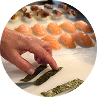
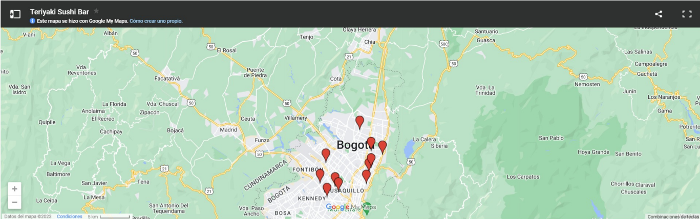

Lie de comunicacion DOMICILIOS Bogota 600 09 90 (Da Click Aca)

Quienes somos
¡La más rica comida asiática en un solo lugar! TERIYAKI es el mejor restaurante de comida tradicional asiática, con platos de Japón, Tailandia, Singapur y Vietnam. Vive la experiencia

Catering y Domicilios
En Bogotá puedes pedir tu domicilio al 600 00 00 y en Barranquilla al 311 00 00. También puedes utilizar la plataforma de RAPPI.
Nuestros Restaurantes
Tenemos 12 restaurantes en Bogotá, 3 en Barranquilla y 1 en Cartagena. ¡Encuentra el TERIYAKI más cercano, para que vivas la mejor EXPERIENCIA! ¡Nuestro servicio especial de catering es perfecto para una ocasión especial!.Ubica el TERIYAKI más cerca para que puedas vivir la mejor EXPERIENCIA!
